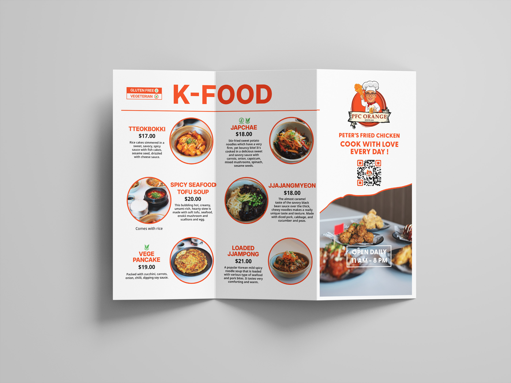
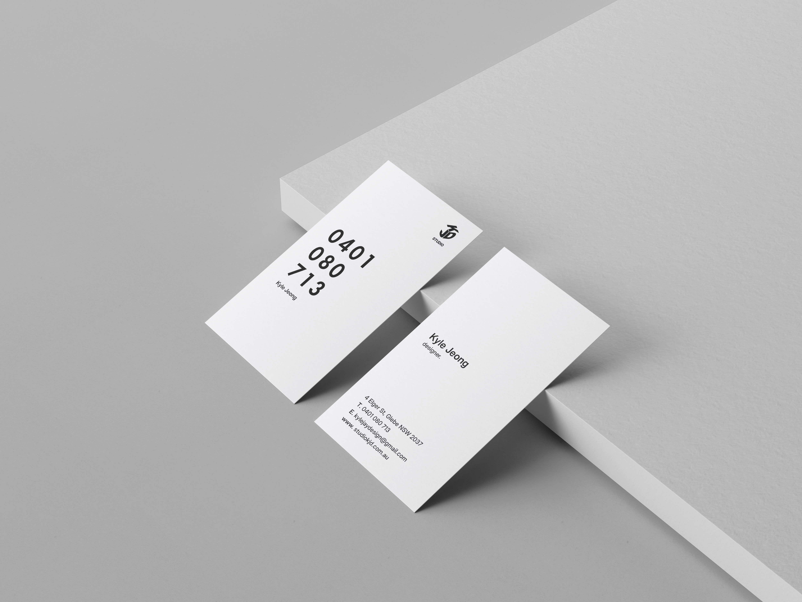
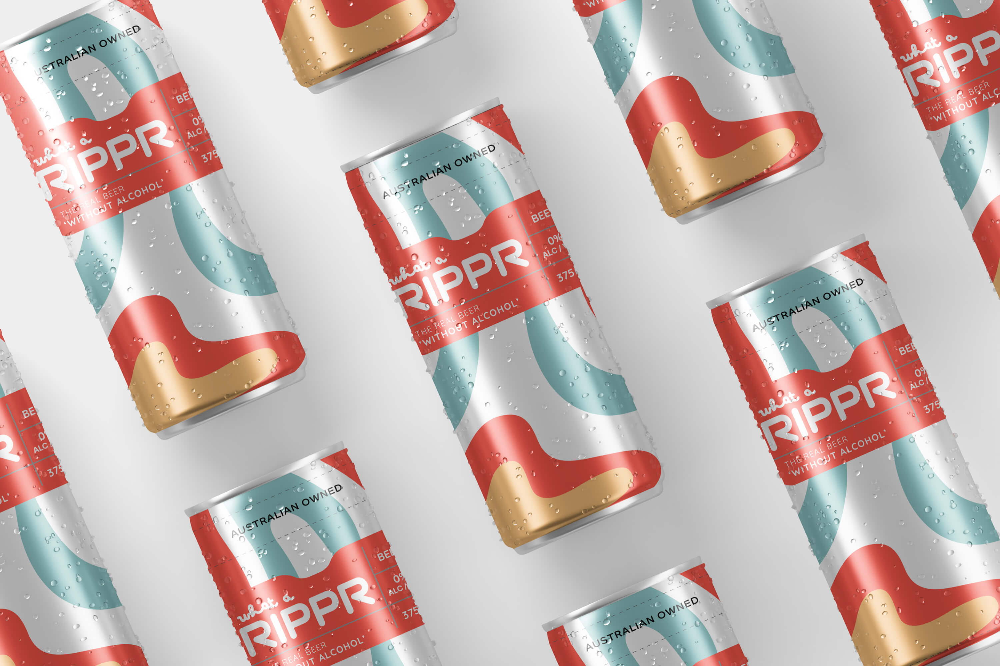

Logo

Menu

Business Card

Product
Graphic Designer
Logo
Menu
Business Card
Product
I’m a young, nimble, and impact-driven designer, specialising in meaningful brand and identity transformation. I believe that for brands to grow sustainably, creativity alone isn’t enough — it needs to be guided by clear purpose and insight-led strategy. I work closely with individuals and organisations to help them define and express their purpose, building the foundation for smarter, more efficient, and more compelling ways to engage with the world. As the challenges brands face grow increasingly complex and fragmented, I take an adaptive approach that’s platform and channel agnostic. My concept-first mindset and focus on consistent identity systems allow brands to communicate their most powerful narratives visually, across every touchpoint and experience. My work is human-centred, locally informed, and globally aware — grounded in cultural relevance while intentionally reaching beyond borders. Whether collaborating with startups or established names, I focus on helping clients clarify who they are and how they connect with others. Every project is hands-on, from start to finish. When a challenge calls for it, I build small, trusted teams of collaborators to complement my practice — ensuring each solution is tailored, thoughtful, and free from unnecessary complexity. This way, clients get direct access to senior-level thinking and creative output at every stage. I focus primarily on brand creation, repositioning, and transformation. My goal with every assignment is to create brands, identities, and stories that stand the test of time — work that people can feel a real and lasting connection to.
T. +61 (0)401 080 713, +82 (0)10 7574 8160